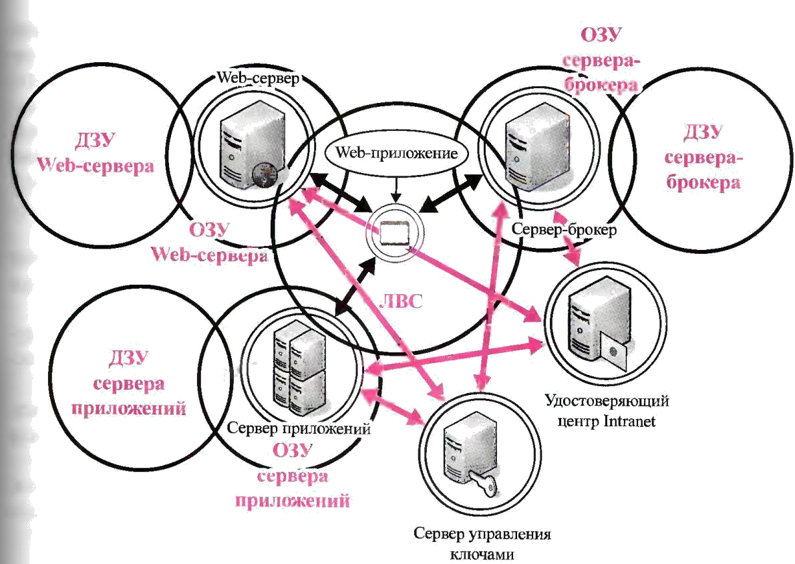

Лабораторная работа 14.
Изучение методов построения комплексной защиты сетевых приложений и баз данных
Цель работы: изучить методы построения комплексной защиты сетевых приложений и баз данных.
Теоретическая часть
Типовые архитектуры сетевых приложений
Сетевые приложения и базы данных тесно связаны между собой и являются ядром информационной инфраструктуры современного предприятия. Например, сетевую файловую систему можно рассматривать как сетевое приложение, использующее примитивную базу данных, записями которой являются файлы. В свою очередь, электронная почта также является сетевым приложением.
Сетевые базы данных обеспечивают распределенное хранение информационных ресурсов предприятия, а сетевые приложения — их распределенную обработку.
Под термином «распределенный» мы, прежде всего, понимаем совместную работу взаимодействующих вычислительных устройств и средств телекоммуникаций, направленную на достижение общей цели, решение общей задачи, т. е. нельзя рассматривать процессы распределенной обработки и хранения информации как простую сумму вычислительных ресурсов. В принципе распределенной обработки информации отражены важнейшие системные свойства, определяющие качественное изменение технологий обработки информации.
Первое системное свойство — взаимодействие компонентов системы распре-дезенной обработки и хранения информации. Узлы компьютерной сети специализируются на решении отдельных подзадач, в процессе работы над которыми активно обмениваются необходимыми им данными. Речь идет не о простом распараллеливании вычислительного процесса, а о его глубинном перерождении. Носитсзем идей нового подхода к организации вычислитезьного процесса является объектно-ориентированное программирование.
Задача описывается в виде взаимодействующих объектов, а ее решение есть некоторое визируемое состояние системы объектов, отвечающее четко описанным критериям. В компьютерной сети каждый из объектов может быть представлен в виде самостоятельного вычислительного процесса, работающего на одном или нескольких узлах.
Второе системное свойство — масштабируемость системы распределенной обработки и хранения информации. Описание задачи в виде типовых элементарных объектов с детально описанными правилами взаимодействия позволяет легко наращивать производительность вычислительной системы и адаптировать ее к динамично меняющимся условиям и требованиям современного мира.
Третье системное свойство— независимость макроархитектуры системы распределенной обработки и хранения информации от микроархитектуры ее элементов. Данное свойство выражается в реализации взаимодействия компонентов через интерфейсы, определяющие функциональное содержание их ролей. Иначе говоря, системе нет никакого дела до внутренней реализации каждого интерфейса отдельными объектами, и эволюция вычислительных процессов в каждом объекте может протекать независимо от остальных элементов.
Простейшая архитектура сетевого приложения была описана в разделе, посвященном комплексной защите сетевой файловой системы. Она основывалась на расширении классического вызова подпрограммы, возможностью вызова процедуры, которая в действительности выполнялась на другом узле компьютерной сети. Сама сеть при этом служила для передачи идентификатора требуемой функции и параметров вызова, а после окончания работы программы на удаленном узле — результатов ее выполнения.
Такая модель хорошо работала на заре эры компьютерных сетей и глобальных телекоммуникаций. Процесс укрупнения и усложнения информационных систем, который неотрывно следовал за аналогичными процессами в мировой экономике, вызвал эволюцию организации вычислительного процесса, и она пошла по тому же пути, что и в области классического программирования. На горизонте появились объекты.
Если раньше приложение разрабатывалось целиком от интерфейса пользователя до подсистемы хранения данных, то теперь эти задачи разделились, и работа над ними стала проводиться независимо. Совершенствование технологий разработки программного обеспечения позволило появиться такому направлению, как САБЕ-технологии.
Теперь программы можно строить из готовых блоков — объектов; необходимо только описать правила их взаимодействия. Именно этой цели и служат современные языки описания сценариев, которые включают в себя основные алгоритмические конструкции и средства оперирования объектами.
Структура объектов сетевого приложения приведена на рис. 1.1.
На схеме показано распределение объектов сетевого приложения по различным зонам.
Обратите внимание на то, что объекты существуют в ОЗУ, ДЗУ и ЛВС во время выполнения приложения. Программный код, реализующий методы объектов, хранится в ДЗУ до того момента, пока не будет загружен в ОЗУ и связан со структурой данных, описывающих атрибуты или поля объектов. Как и их предшественники — классические приложения, выполняемые на одном процессоре, вычислительном устройстве, — сетевые приложения могут использовать все возможности системы ввода/вывода. Но наибольшую эффективность от использования сетевых приложений можно получить, если в качестве источника информации будут выступать сетевые базы данных.
Сетевые базы данных, как и сетевые приложения — это, прежде всего, распределенная система. Но если сетевые приложения специализируются на распределенной обработке данных, то сетевые базы данных — на распределенном хранении данных.
Задача распределенного хранения заключается не только в
«распылении» данных по узлам компьютерной сети, но, прежде всего, в обеспечении их целостности и доступности. Не будет особой пользы от того, что «А» хранится здесь, а «Б» — на другом конце земного шара. А вот если требуемые нам данные извлекаются быстро из ближайшего к нам источника и при этом всегда поддерживаются в актуальном состоянии независимо от удаленности от первичного источника информации — это совсем другое дело.
База данных— это модель некоторой предметной области, включающая в себя факты и логические отношения между ними.С точки зрения формальной логики процесс работы с базой данных — это процесс доказательства или опровержения теорем, некоторой теории, аксиомами которой являются факты {записи) базы данных, а правила вывода соответствуют классической логике высказываний или логике предикатов первого порядка.
Наибольшая концентрация объектов наблюдается в оперативной памяти сервера баз данных.
Давайте посмотрим на типовые архитектуры построения современных сетевых приложений, использующих в качестве основного источника информации сетевые базы данных
В схеме приложение выполняется на компьютере пользователя и взаимодействует посредством компьютерной сети с сервером баз данных. Это наиболее простая схема организации сетевого приложения, где на сеть ложится нагрузка по передаче информации между приложением и базой данных.
Рис. 1.2.Структура объектов реляционной базы данных
Рис. 1.3. Простая схема организации сетевого приложения
На схеме, показанной на рис. 1.4, мы наблюдаем декомпозицию задачи на три независимых процесса:
представление информации — реализуется программными средствами сетевого приложения, выполняемыми на компьютере клиента;
обработка информации— реализуется программным обеспечением сервера приложения;
хранение информации — реализуется сервером базы данных.
14.4
Рис. 1.4. Три независимых процесса в сетевом приложении
Главными преимуществами такой архитектуры приложения являются: независимая эволюция каждого компонента, которая может
происходить в разное время с различной скоростью;
повышение производительности за счет специализации и оптимизации каждого вычислительного устройства на решении узкой, относительно самостоятельной задачи;
неограниченное наращивание возможностей за счет использования типовых элементов и правил их взаимодействия.
Пример наращивания возможностей сетевого приложения, использующего сетевые базы данных, показан на рис. 1.5.
Отличие представленной на рис. 1.6 архитектуры от предыдущей заключается в разделении задачи представления информации между клиентом сетевого приложения иWeb-сервером. Это позволяет отказаться от необходимости устанавливать на клиенте компьютера дополнительное программное обеспечение, предназначенное для организации взаимодействия с сервером приложения.
Вместо этого используется унифицированный клиент на базе обозревателя 1пгете1 и стандартный протокол HTTP. Web-сервер переводит зависящие от приложения элементы представления информации на язык стандартных примитивов, описываемых языком HTML, на смену которому в последнее время приходит более современный и удобный стандарт XML. Web-сервер выполняет «отрисовку» электронного документа, который можно сохранить на носителе пользователя, вывести на печать или отправить
по электронной почте. В то же время Web-сервер унифицирует процедуру взаимодействия пользователя через интерфейс форм, позволяющих структурировать запрос пользователя к информационной системе.
Рис. 1.5. Наращивание возможностей сетевого приложения
Рис. 1.6. Разделение задачи представления информации между клиентом сетевого приложения и Web-сервером.
Задачу сопряжения интерфейса сетевого приложения и интерфейса унифицированного клиента выполняют Web-приложения. Это сценарии, оперирующие объектами и выполняющие отображение множества параметров сетевого приложения на множество элементов управления унифицированного клиента.
Но даже такой гибкой архитектуры оказалось недостаточно для удовлетворения потребности в удобной и эффективной разработке сетевых приложений любой сложности.
Поэтому в настоящий момент используется более сложная схема, показанная на рис. 1.7.
Рис. 1.7. Архитектура сетевого приложения с сервером-брокером.
В архитектуру добавлен сервер-брокер, задача которого — поиск необходимых для работы сетевого приложения объектов на одном или более серверах приложений. Введение этого компонента повышает эффективность работы сетевого приложения, упрощает «сборку» объектов приложения, поскольку теперь нет необходимости учитывать топологию серверов приложений, местонахождение отдельных объектов, требуемых для решения задачи. Мы просто сообщаем серверу-брокеру, что нам нужно, а он, в свою очередь, основываясь на оперативной информации о доступных ему ресурсах, выбирает оптимальный путь решения нашей проблемы. Теперь объекты сетевых приложений могут свободно мигрировать между серверами для достижения наибольшей производительности, и это никак не скажется на работе сетевых приложений, поскольку в функции сервера-брокера входит отслеживание всех изменений в размещении компонентов приложения.
Все рассмотренные схемы успешно сосуществуют в мире современных сетевых приложений.
Комплексная защита сетевых приложений и баз данных
Перейдем к рассмотрению комплексной защиты сетевых приложений и баз данных (рис. 1.8).
Выполним разбиение на отдельные контуры зашиты. Начнем с рассмотрения различных зон ЛВС (рис. 1.9)
Обратите внимание на три различные зоны ЛВС: ЛВС 1, ЛВС 2 и ЛВС
3.
Зона ЛВС 1 относится к фрагменту телекоммуникационной системы,
связующей клиента сетевого приложения и Web-сервер, обслуживающий представительскую логику. Здесь речь идет, в том числе, и об участке, проходящем в системе глобальных телекоммуникаций. В случае Intranet
данная зона пересекается с зоной ЛВС 2. Это локальная вычислительная сеть, в которую непосредственно включены и клиент сетевого приложения, и серверы.
Зона ЛВС 3 соответствует защищенному или изолированному участку корпоративной сети, обслуживающей серверы информационных служб и приложений.
Она может пересекаться с зоной ЛВС 2 локальной вычислительной сети какого-либо подразделения, но, как правило, не пересекается с зоной ЛВС 1 — зоны глобальных телекоммуникаций.
Рассматриваемый контур защиты описывает рубежи и средства защиты информации, непосредственно взаимодействующие с клиентской составляющей сетевого приложения.
В зоне ДЗУ клиента сетевого приложения, согласно схем объектов защиты, содержатся: фрагменты баз данных, доступ к которым
осуществляется в текущем сеансе, и которые были сохранены (кэшированы) на жестком диске компьютера в целях повышения производительности или избегания ненужных повторных передач информации, которая мало подвержена изменениям; модули объектов сетевого приложения; электрон- ные документы, полученные в результате работы сетевого приложения.Особый интерес для злоумышленников представляют файлы конфигурации (настроек) сетевых приложений, которые могут содержать критическую информацию — реквизиты доступа к серверам баз данных или серверам приложений.
Типовые нападения на зону ДЗУ клиента:
• несанкционированный доступ к временным файлам с фрагментами баз данных и электронных документов; цель: располагая информацией об архитектуре и особенностях реализации сетевого приложения, получить доступ к классифицированной информации, незащищенной средствами сетевого приложения;
• хищение модулей и файлов конфигурации сетевых приложений; цель: используя возможности файловой системы, выполнить копирование модулей и файлов конфигурации сетевого приложения на носитель злоумышленника для последующего анализа на предмет наличия уязвимостей и возможностей получения несанкционированного доступа к информационным ресурсам сетевого приложения;
• модификация модулей и файлов конфигурации сетевых приложений; цель: ослабить или обойти средства защиты информации сетевого приложения для последующего создания удобного плацдарма, с которого можно осуществить доступ к информационным ресурсам сетевого приложения;
• внедрение программных закладок в программное обеспечение сетевых приложений; цель: установление контроля над вычислительными средствами клиента сетевого приложения в момент его запуска санкционированным пользователем.
Основной рубеж защиты создается с помощью встроенных средств защиты информации операционной системы и сетевого приложения. На первый план выходят средства контроля целостности и криптографической защиты информации. Привлечение средств электронной цифровой подписи позволяет ужесточить контроль за внесением изменений в программную среду клиента сетевого приложения. Качественная настройка механизмов операционной системы позволяет создать изолированное окружение для программного обеспечения сетевого приложения — так называемую «песоч- ницу». Суть данного подхода заключается в ограничении сетевого приложения в выполнении потенциально опасных операций: запись в привилегированные области файловой системы, запуск новых процессов, загрузка исполняемых модулей и т. п. Управление средствами защиты сетевых приложений строится на основе системы правил политики безопасности сетевого приложения. Разработчики платформ для сетевых приложений предоставляют удобные графические и интуитивно понятные интерфейсы для настройки таких механизмов.
Зоне ОЗУ клиента сетевого приложения угрожают следующие типовые нападения:
использование уязвимостей программного обеспечения сетевого приложения; цель: путем перехвата управления внедрить в исполняемые процессы вредоносноепрограммное обеспечение с последующим проникновением его в зону ДЗУ и имплантацией в программную среду вычислительной системы;
хищение реквизитов доступа к сетевым базам данных и приложениям; цель: обнаружить в оперативной памяти структуры, содержащие критическую информацию — реквизиты доступа пользователя,
• перенести ее в область, потенциально доступную злоумышленнику; реализуется через программные закладки и уязвимости программного обеспечения;
подключение к существующему сеансу работы с базой данных или сетевым приложением; цель: захватить контроль над рабочими объектами сетевых приложений, как правило, копированием или созданием ссылки на объекты интерфейсов доступа к базе данных или сетевому приложению после процедуры аутентификации и согласования параметров безопасности;
перехват электронных документов; цель: используя архитектурные особенности унифицированных клиентов сетевых приложений (например стандартного обозревателя 1п1еше1), получить доступ к классифицированной информации в виде электронных документов,
• «осевших» в накопительных областях (кэшах);
подмена загружаемых модулей; цель: вынудить клиентское программное обеспечение выполнить загрузку исполняемого модуля, навязанного злоумышленником;
нарушение работы сетевого приложения; цель: посредством уязвимостей или, используя архитектурные особенности сетевого приложения, частично или полностью вывести его из строя;
7) навязывание операций; цель: используя уязвимости программного обеспечения, архитектурные особенности или программные закладки, выполнить имитацию операций санкционированного пользователя.
Основной рубеж защиты создается взаимодействием встроенных средств зашиты операционной системы, программного обеспечения сетевого приложения и специальными программными средствами защиты: антивирусные программы, персональные межсетевые экраны, программы создания изолированных сред или виртуальных вычислительных систем, программы обнаружения вторжений, программы автоматического поиска уязвимостей.
Зоны ЛВС 1, ЛВС 2, ЛВС 3 подвержены следующим типовым нападениям:
• перехват данных; цель: восстановить информационные объекты из перехваченных сетевых пакетов с последующим извлечением ценной информации на вычислительных средствах злоумышленника;
• ложный сервер: цель: активно подавляя санкционированный сервер, вынудить клиента сетевого приложения к работе с сервером злоумышленника; данное нападение позволяет похитить реквизиты доступа к санкционированному серверу или навязать ложную информацию пользователю сетевого приложения:
• блокирование клиента сетевого приложения; цель: используя уязвимости программного обеспечения, особенности архитектуры и топологии телекоммуникационной системы, прекратить работу сетевого приложения;
• внедрение в сеанс работы сетевого приложения; цель: используя подконтрольные злоумышленнику средства телекоммуникации модифицировать канал передачи данных, внедрив в него промежуточный сетевой узел, который по отношению к клиенту выступает в роли сервера, а по отношению к серверу — в роли клиента.
Отражение нападений реализуется средствами сетевых операционных систем, встроенными средствами сетевых приложений, аппаратно- программными средствами межсетевых экранов и телекоммуникационного оборудования. Для контроля целостности и защиты конфиденциальности данных применяются криптографические средства. Взаимную аутентификацию клиента и сервера необходимо проводить на основе инфра- структуры открытого ключа особенно для зоны ЛВС 1. В зонах ЛВС 2 и ЛВС 3 допустимо использовать централизованный сервер управления ключевой информацией и скоростные алгоритмы шифрования информации на основе симметричной криптографии.
Для раннего обнаружения и предотвращения нападений на ресурсы сетевых приложений и баз данных применяются системы обнаружения вторжений и автоматического поиска уязвимостей. Сенсоры данных систем, расположенные в соответствующих зонах, дополнительно могут быть усилены сенсорами, размещенными в сетевых узлах. Борьба с вредоносным программным обеспечением ведется с помощью кор- поративных программных средств антивирусной защиты и контроля целостности.
Рубежи криптографической защиты в сетевых зонах реализуются взаимодействием криптографических средств операционных систем, сетевых приложений, межсетевых экранов и телекоммуникационного оборудования.
Данные средства обеспечивают глубокоэшелонированную криптографическую защиту передаваемой информации.
Защита процедур взаимодействия средств представления информации со средствами ее обработки
Данный контур защиты описывает взаимодействие средств представления информации со средствами ее обработки (рис. 1.10).
Web-приложения, которые реализуются, как правило, в виде сценариев, описывающих операции над системными и пользовательскими объектами, осуществляют доступ к ресурсам сервера-брокера или сервера приложений. Объектом взаимодействия этих трех подсистем является, прежде всего, адресная информация о расположении фрагментов приложения.
Зоне ДЗУ Web-сервера угрожают следующие типовые нападения: модификация сценариев Web- приложений; цель: используя
• уязвимости программного обеспечения, ошибки конфигурации и
• программные закладки, внедрить в сетевое приложение объекты злоумышленника;
модификация модулей программного обеспечения и файлов конфигураций Web-сервера; цель: используя уязвимости программного обеспечения, ошибки конфигурирования или программные закладки, получить контроль над Web-сервером;
хищение реквизитов доступа из файлов конфигурации; цель: извлечь или восстановить из файлов конфигурации
'еЬ- приложения критическую информацию, позволяющую получить доступ к серверу приложений или серверу-брокеру от лица санкционированного пользователя.

Типовые нападения на зону ОЗУ сервера приложений:
• использование уязвимостей программного обеспечения; цель: установление контроля над сервером приложений путем воздействия на уязвимости программного обеспечения и ошибки конфигурации;
• внедрение в активный сеанс сетевого приложения; цель: обойти средства аутентификации и авторизации и воспользоваться активными структурами существующего сеанса для осуществления доступа от лица санкционированного пользователя;
• подавление средств защиты; цель: используя архитектурные особенности реализации, уязвимости встроенных и прицепных средств защиты, вывести их из строя или снизить эффективность;
• модификация активных объектов; цель: используя программные закладки, обойти средства контроля целостности сетевых приложений и выполнить модификацию программного кода в оперативной памяти в интересах злоумышленника.
Типовые нападения на зону ДЗУ сервера-брокера:
модификация исполняемых модулей и файлов конфигурации сервера- брокера; цель: путем модификации программного обеспечения или файлов конфигурации установить контроль над сервером-брокером;
модификация базы данных размещения объектов сетевых приложений.
цель: изменить топологию связей объектов сетевого приложения, внедрить объекты злоумышленника.
Типовые нападения на зону ОЗУ сервера-брокера:
использование уязвимостей программного обеспечения; цель:
воздействуя н.; уязвимости программного обеспечения, ошибки конфигурации или внедряя программные закладки, установить контроль над сервером-брокером в интересах злоумышленника;
имитация события изменения расположения объектов сетевого приложения; цель: ввести в базу данных сервера-брокера ложную информацию о расположении объектов сетевого приложения в узлах компьютерной сети;
3) подавление средств защиты; цель: используя уязвимости программного обеспечения, ошибки конфигурации и вредоносное программное обеспечение, блокировав работу встроенных и наложенных средств защиты информации.
Защита в узлах зоны ЛВС осуществляется с помощью встроенных средств защиты операционных систеч, систечного и прикладного программного обеспечения серверов. Дополнительно привлекаются локальные межсетевые экраны, средств антивирусных программ и контроля целостности. Взаимодействие криптографических средств защиты информации сетевых узлов и телекоммуникационного оборудования об- разуют рубеж в зоне ЛВС.
Взаимная аутентификация узлов основывается на криптографии с открытым ключом. Для контроля целостности и проверки подлинности объектов информационного взаимодействия применяется ЭЦП. Дополнительно, в целях повышения производительности, криптографическое взаимодействие сервера приложений и сервера-брокера может осуществляться с использованием скоростных симметричных шифров на основе централизованного управления ключевой информацией.
Управление топологией связей объектов сетевого приложения может дополнительно обеспечиваться средствами межсетевых экранов и телекоммуникационного оборудования.
Контур, представленный на рис. 1.11, описывает защиту взаимодействия объектов подсистемы обработки информации.
Главное преимущество сетевых приложений — распределенная обработка информации — одновременно является их фундаментальной уязвимостью. Тот факт, что часть обработки информации происходит на удаленном узле, вне контроля локального монитора безопасности, потенциально открывает путь к широкому спектру нарушений информационной безопасности. Как можно обеспечить доверие в распределенной среде?
Прежде всего, жестким контролем над информационными потоками, который реализуется аппаратно-программными средствами межсетевых экранов и телекоммуникационного оборудования. И, конечно, немыслимо обойтись без средств криптографической защиты.
Принцип спецслужб: доверяй, но проверяй, активно используется при распределенной обработке информации. Загружаемые исполняемые модули проверяются на наличие в них запрещенных политикой безопасности операций. Для них вводятся ограничения по доступу к привилегированным объектам операционной системы и программной среды серверов приложений. Входные данные контролируются на предмет соответствия типов, принадлежности к допустимому диапазону значений, выполнения ло- гических условий, наличия известных признаков информационных нападений. Выходные данные также проверяются на соответствие типов, диапазонов значений, выполнение логических условий, в том числе связанных с информационной безопасностью. Использование ключевых параметров в системах криптографической защиты строго лимитировано по времени.
Остановимся на типовых нападениях, характерных для зоны ЛВС:
перехват данных; цель: восстановить из перехваченных сетевых пакетов сеансы удаленного вызова процедур и функций, а также извлечь информацию о переданных дтя обработки и полученных после нее данных;
внедрение в сеанс; цель: активно подавляя одного из участников сеанса, после того как были завершены фазы аутентификации и авторизации, занять его место в сетевом сеансе и получить доступ к информационным ресурсам и услугам;
блокирование сетевых приложений: цель: используя архитектурные особен- шости. уязвимости и ошибки конфигурации, нарушить штатное функционирование сетевых приложений.
Контур, представленный на рис. 1.12, описывает защиту взаимодействия подсистемы обработки информации с подсистемой хранения.
Защита информации в базах данных
В современных СУБД поддерживается один из двух наиболее общих подходов к вопросу обеспечения безопасности данных: избирательный подход и обязательный подход. В обоих подходах единицей данных или
«объектом данных», для которых должна быть создана система безопасности, может быть как вся база данных целиком, так и любой объект внутри базы данных.
Эти два подхода отличаются следующими свойствами:
в случае избирательного управления некоторый пользователь обладает различными правами (привилегиями или полномочиями) при работе с данными объектами. Разные пользователи могут обладать разными правами доступа к одному и тому же объеду. Избирательные права характеризуются значительной гибкостью;
в случае избирательного управления, наоборот, каждому объекту данных присваивается некоторый классификационный уровень, а каждый пользователь обладает некоторым уровнем допуска. При таком подходе доступом к определенному объекту данных обладают только пользователи с соответствующим уровнем допуска;
для реализации избирательного принципа предусмотрены следующие методы. 6 базу данных вводится новый тип объектов БД — это пользователи. Каждому пользователю в БД присваивается уникальный идентификатор. Для дополнительной защиты каждый пользователь, кроме уникального идентификатора, снабжается уникальным паролем, причем если идентификаторы пользователей в системе доступны системному ад- министратору, то пароли пользователей хранятся, чаше всего, в специальном кодированном виде и известны только самим пользователям;
В последних версиях ряда коммерческих СУБД появилось
понятие «роли». Роль — это поименованный набор полномочий. Существует ряд стандартных ролей, которые определены в момент установки сервера баз данных. Имеется возможность создавать новые роли, группируя в них произвольные полномочия. Введение ролей позволяет упростить управление привилегиями пользователей, структурировать этот процесс. Кроме того,
введение ролей не связано с конкретными пользователями, поэтому роли могут быть определены и сконфигурированы до того, как определены пользователи системы; пользователю может быть назначена одна или несколько ролей; объектами БД, которые подлежат защите, являются все объекты, хранимые в БД- таблицы, представления, хранимые процедуры и триггеры.
Для каждого типа объектов есть свои действия, поэтому для каждого типа объектов могут быть определены разные права доступа.
На самом элементарном уровне концепции обеспечения безопасности баз данных исключительно просты. Необходимо поддерживать два фундаментальных принципа: проверку полномочий и проверку подлинности (аутентификацию).
Проверка полномочий основана на том. что каждому пользователю или процесс) информационной системы соответствует набор действий, которые он может выполню I по отношению к определенным объектам. Проверка подлинности означает достоверное подтверждение того, что пользователь или процесс, пытающийся выполнить санкционированное действие, действительно тот, за кого он себя выдает.
Система назначения полномочий имеет в некотором роде иерархический характер Самыми высокими правами и полномочиями обладает системный администратор ил? администратор сервера БД. Традиционно только этот тип пользователей может создана! других пользователей и наделять их определенными полномочиями. СУБД в своих системных каталогах хранит как описание самих пользователей, так и описание их привилегий по отношению ко всем объектам.
Далее схема предоставления полномочий строится по следующему принципу. Каждый объект в БД имеет владельца — пользователя, который создал данный объект. Владелец объекта обладает всеми правами- полномочиями на данный объект, в том числе и он имеет право предоставлять другим пользователям полномочия по работе с данным объектом или забирать у пользователей ранее предоставленные полномочия.
ряде СУБД вводится следующий уровень иерархии пользователей — администратор БД. В этих СУБД один сервер может управлять множеством СУБД (например МSSQLServer? Sybase).
СУБД Oracle применяется однобазовая архитектура, поэтому там вводится понятие подсхемы — части общей схемы БД, и вводится пользователь, имеющий доступ к подсхеме.
стандарте SQL определены два оператора: GRANT и REVOKE, соответственно предоставления и отмены привилегий.
Оператор предоставления привилегий имеет следующий формат: GRANT {<списокдействий>| ALL PRIVILEGES } ON <имя_объекта> ТО {<имя_пользователя> | PUBLIC } [WITH GRANT OPTION ]
Здесь список определяет набор действий из общедопустимого перечня действий над объектом данного типа:
параметр ALL PRIVILEGES указывает, что разрешены все действия из допустимых хтя объектов данного типа;
<имя_объекта> задает имя конкретного объекта: таблицы, представления, хранимой процедуры, триггера;
<имя пользоватсля> или PUBLIC определяет, кому предоставляются данные привилегии:
параметр WITH GRANT OPTION является необязательным и определяет режим, при котором передаются не только права на указанные действия, но и право передавать эти права другим пользователям. Передавать права в этом случае пользователь может только в рамках разрешенных ему действий.
Рассмотрим пример. Пусть у нас существуют три пользователя с абсолютно уникальными именами userl, user2 и user3. Все они являются пользователями одной БД.
Userl создал объект Таb1; он является владельцем этого объекта и может передать права на работу с этим объектом другим пользователям. Допустим, что пользователь user2 является оператором, который должен вводить данные в Таb1 (например, таблицу новых заказов), а пользователь
user 3 является большим начальником (например, менеджером отдела), который должен регулярно просматривать введенные данные.
Для объекта типа таблица полным допустимым перечнем действий является набор из четырех операций: SELECT, INSERT, DELETE, UPDATE. При этом операция обновления может быть ограничена несколькими столбцами.
Общий формат оператора назначения привилегий для объекта типа таблица будет иметь следующий синтаксис:
GRANT {[SELECT][.INSERT][.DELETE][,UPDATE (<списокстолб-
цов») ] }
ON <имятаблицы»
TO {<имяпользователя> | PUBLIC } [WITH GRANT OPTION ] Тогда резонно будет выполнить следующие назначения:
GRANT INSERT ON Таb1 TO user2 GRANT SELECT ON Таb1 TO user3
Эти назначения означают, что пользователь user2 имеет право только вводить новые строки в отношениях Таb1, а пользователь user3 имеет право просматривать все строки в таблице Таb1.
При назначении прав доступа на операцию модификации можно уточнить, значение каких столбцов может изменять пользователь. Допустим, что менеджер отдела имеет право изменять цену на предоставляемые услуги. Предположим, что цена задается в столбце COST таблицы Таb1. Тогда операция назначения привилегий пользователю user3 может измениться и выглядеть следующим образом:
GRANT SELECT. UPDATE (COST) ON Таb1 TO user3
Если наш пользователь userl предполагает, что пользователь user4 может его замещать в случае его отсутствия, то он может предоставить этому пользователю все права по работе с созданной таблицей Таb1.
GRANT ALL PRIVILEGES ON Таb1 TO user4 WITH GRANT OPTION
В этом случае пользователь user4 может сам назначать привилегии по работе с таблицей ТаЫ в отсутствие владельца объекта пользователя userl. Поэтому в случае появления нового оператора пользователя user5 он может назначить ему права на ввод новых строк в таблицу командой
GRANT INSERT ON Tabl TO user5
Если при передаче полномочий набор операций над объектом ограничен, то пользователь, которому переданы эти полномочия, может передать другому пользователю только те полномочия, которые есть у него, или часть этих полномочий. Поэтому, если пользователю user4 были делегированы следующие полномочия:
GRANT SELECT, UPDATE, DELETE ON Tabl TO user4
WITH GRANT OPTION то пользователь user4 не сможет передать полномочия на ввод данных пользователю user5, потому что эта операция не входит в список разрешенных для него самого Кроме непосредственного назначения прав по работе с таблицами, эффективны'-' методом защиты данных может быть создание представлений, которые будут содержать только необходимые столбцы для работы конкретного пользователя и предоставление прав на работу с данным представлением пользователю.
Так как представления могут соответствовать итоговым запросам, то для этих представлений недопустимы операции изменения, и, следовательно, для таких представлений набор допустимых действий ограничивается операцией SELECT. Если же представления соответствуют выборке из базовой таблицы, то для такого представления допустимыми будут все 4 операции: SELECT, INSERT, UPDATE и DELETE.
Для отмены ранее назначенных привилегий в стандарте SQL определен оператор REVOKE. Оператор отмены привилегий имеет следующий синтаксис:
REVOKE {<список операций | ALL PRIVILEGES} ON <имя объекта>
FROM {«список пользователей I PUBLIC } {CASCADE | RESTRICT } Параметры CASCADE или RESTRICT определяют, каким образом должна производиться отмена привилегий. Параметр CASCADE отменяет привилегии не только пользователя, который непосредственно упоминался в операторе GRANT при предоставлении ему привилегий, но и всем пользователям, которым этот пользователь присвоил привилегии, воспользовавшись параметром WITH GRANT OPTION.
Например, при использовании операции:
REVOKE ALL PRIVILEGES ON
Tabl TO user4 CASCADE
будут отменены привилегии и пользователя user5, которому пользователь user4 успел присвоить привилегии.
Параметр RESTRICT ограничивает отмену привилегий только пользователю, непосредственно упомянутому в операторе REVOKE. Но при наличии делегированных привилегий этот оператор не будет выполнен. Так, например, операция:
REVOKE ALL PRIVILEGES ON Tabl
TO user4 RESTRICT не будет выполнена, потому что пользователь user4 передал часть своих полномочий пользователю user5.
Посредством оператора REVOKE можно отобрать все или только некоторые из ранее присвоенных привилегий по работе с конкретным объектом. При этом из описания синтаксиса оператора отмены привилегий видно, что можно отобрать привилегии одним оператором сразу у нескольких пользователей или у целой группы PUBLIC.
Поэтому корректным будет следующее использование оператора
REVOKE: REVOKE INSERT ON Tabl
TO user2,user4 CASCADE
При работе с другими объектами изменяется список операций, которые используются в операторах GRANT и REVOKE.
По умолчанию действие, соответствующее запуску (исполнению) хранимой процедуры, назначается всем членам группы PUBLIC.
Если вы хотите изменить это условие, то после создания хранимой процедуры необходимо записать оператор REVOKE. REVOKE EXECUTE ON COUNT EX TO PUBLIC CASCADE. Теперь мы можем назначить новые права пользователю user4:
GRANT EXECUTE
ON COUNT_EX
TO user4
Системный администратор может разрешить некоторому пользователю создавать и изменять таблицы в некоторой БД. Тогда он может записать оператор предоставления прав следующим образом:
GRANT CREATE TABLE, ALTER TABLE. DROP TABLE ON DB_LIB TO userl
этом случае пользователь userl может создавать, изменять или удалять таблицы в БД DBLIB. Однако он не может разрешить создавать или изменять таблицы в этой БД другим пользователям, потому что ему дано разрешение без права делегирования своих возможностей.
некоторых СУБД пользователь может получить права создавать БД. Например, в MS SQL Server системный администратор может предоставить пользователю mainuser право на создание своей БД на данном сервере. Это может быть сделано следующей командой:
GRANT CREATE DATABASE ON SERVER_0
TO mainuser
По принципу иерархии пользователь mainuser, создав свою БД, теперь может предоставить права на создание или изменение любых объектов в этой БД другим пользователям.
В СУБД, которые поддерживают однобазовую архитектуру, такие разрешения недопустимы. Например, в СУБД Oracle на сервере создается только одна БД, но пользователи могут работать на уровне подсхемы (части таблиц БД и связанных с ними объектов). Поэтому там вводится понятие системных привилегий. Их очень много: 80 различных привилегий.
Для того чтобы разрешить пользователю создавать объекты внутри этой БД, используется понятие системной привилегии, которая может быть назначена одному или нескольким пользователям. Они выдаются только на действия и конкретный тип объекта. Поэтому, если вы, как системный администратор, предоставили пользователю право создания таблиц (CREATE TABLE), то для того чтобы он мог создать триггер для таблицы, ему необходимо предоставить еще одну системную привилегию CREATE TRIGGER Система защиты в Oracle считается одной из самых мощных, но это имеет и обратную сторону — она весьма сложная. Поэтому задача администрирования в Oracle требует хорошего знания как семантики принципов поддержки прав доступа, так и физической реализации этих возможностей.
Реализация системы защиты в MS SQL .ServerSQLserver 6.5 поддерживает 3 режима проверки при определении прав пользователя:
стандартный (standard);
интегрированный(integratedsecrity);
смешанный (mixed).
Стандартный режим защиты предполагает, что каждый пользователь должен иметь учетную запись как пользователь домена NT Server. Учетная запись пользователя домена включает имя пользователя и его индивидуальный пароль. Пользователи доменов могут быть объединены в группы. Как пользователь домена пользователь получает доступ к определенным ресурсам домена. В качестве одного из ресурсов домена и рассматривается SQL Server. Но для доступа к SQL Server пользователь должен иметь учетную запись пользователя MS SQL Server. Эта учетная запись также должна включать уникальное имя пользователя сервера и его пароль. При подключении к операционной среде пользователь задает свое имя и пароль пользователя домена. При подключении к серверу баз данных пользователь задает свое уникальное имя пользователя SQL Server и свой , пароль.
Интегрированный режим предполагает, что для пользователя задается только одна учетная запись в операционной системе как пользователя домена, a SQL Server идентифицирует пользователя по его данным в этой
учетной записи. В этом случае пользователь задает только одно свое имя и один пароль.
случае смешанного режима часть пользователей может быть подключена к серверу с использованием стандартного режима, а часть — с использованием интегрированного режима.
MS SQL Server 7.0 оставлены только 2 режима: интегрированный, называемый Windows NT Authentication Mode (Windows NT Authentication), и смешанный. Mixed Mode (Windows NT Authentication and SQL Server Authentication). Алгоритм проверки аутентификации пользователя в MS SQL Server 7.0 приведен на рис. 1.13 .
При попытке подключения к серверу БД сначала проверяется, какой метод аутентификации определен для данного пользователя. Если определен Windows NT Authentication Mode, то далее проверяется, имеет ли данный пользователь домена доступ к ресурсу SQL Server. Если он имеет доступ, то выполняется попытка подключения с использованием имени пользователя и пароля, определенных для пользователя домена: если данный пользователь имеет права подключения к SQL Server, то подключение выполняется успешно, в противном случае, пользователь получает сообщение о том, что данному пользователю не разрешено подключение к SQL Server.
При использовании смешанного режима аутентификации средствами SQL Server проводится последовательная проверка имени пользователя (login) и его пароля (password); если эти параметры заданы корректно, то подключение завершается успешно. в противном случае, пользователь также получает сообщение о невозможности подключиться к SQL Server.
Для СУБД Oracle всегда используется в дополнение к имени пользователя и пароля в операционной среде его имя и пароль для работы с сервером БД.
Второй задачей при работе с БД, как указывалось ранее, является проверка полномочий пользователей. Полномочия пользователей хранятся в специальных системных таблицах, и их проверка осуществляется ядром СУБД при выполнении каждой операции. Логически для каждого пользователя и каждого объекта в БД как бы строится некоторая условная матрица, где по одному измерению расположены объекты, а по другому— пользователи.
Рис. 1.13. Алгоритм проверки аутентификации пользователя в
MSSQLServer
На пересечении каждого столбца и каждой строки расположен перечень разрешенных операций для данного пользователя над данным объектом. С первою взгляда кажется, что эта модель проверки достаточно устойчивая. Но сложность тогда, когда мы используем косвенное обращение к объектам. Например, пользователю userN не разрешен доступ к таблице Tabl, но этому пользователю разрешен запуск хранимой процедуры SP N. которая делает выборку из этого объекта. По умолчанию все хранимые процедуры запускаются под именем их владельца.
Такие проблемы должны решаться организационными методами. При разрешении доступа некоторых пользователей необходимо помнить о возможности косвенного тосту па.
В любом случае проблема защиты никогда не была чисто технической задачей — это комплекс организационно-технических мероприятий, которые должны обеспечить максимальную конфиденциальность информации, хранимой в БД.
Кроме того, при работе в сети существует еще проблема проверки подлинности полномочий.
Эта проблема состоит в следующем. Допустим, процессу 1 даны полномочия по работе с БД, а процессу 2 такие полномочия не даны. Тогда напрямую процесс 2 не может обратиться к БД, но он может обратиться к процессу 1 и через него получить доступ к информации из БД.
Поэтому в безопасной среде должна присутствовать модель проверки подлинности, которая обеспечивает подтверждение заявленных пользователями или процессами идентификаторов. Проверка полномочий приобрела еще большее значение в условиях массового распространения распределенных вычислений. При существующем высоком уровне связности вычислительных систем необходимо контролировать все обращения к си- стеме.
Проблемы проверки подлинности обычно относят к сфере безопасности коммуникаций и сетей, поэтому мы не будем их здесь более обсуждать, за исключением следующею замечания. В целостной системе компьютерной безопасности, где четкое выполнение программы защиты информации обеспечивается за счет взаимодействия соответствующих средств в операционных системах, сетях, базах данных, проверка подлин- ности имеет прямое отношение к безопасности баз данных.
Заметим, что модель безопасности, основанная на базовых механизмах проверки полномочий и проверки подлинности, не решает таких проблем, как украденные пользовательские идентификаторы и пароли или злонамеренные действия некоторых пользователей, обладающих полномочиями, например, когда программист, работающий над учетной системой, имеющей полный доступ к учетной базе данных, встраивает в код программы «Троянского коня» с целью хищения или намеренного изменения информации. хранимой в БД. Такие вопросы выходят за рамки нашего обсуждения средств защиты баз данных, но следует, тем не менее, представлять себе, что программа обеспечения информационной безопасности должна охватывать не только технические области (такие, как защита сетей, баз данных и операционных систем), но и проблемы физической защиты, надежности персонали (скрытые проверки), аудит, различные процедуры поддержки безопасности, выполняемые вручную или частично автоматизированные.